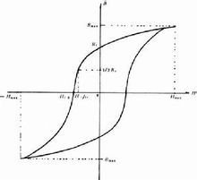

磁性材料
实验表明，任何物质在外磁场中都能够或多或少地被磁化，只是磁化的程度不同。根据物质在外磁场中表现出的特性，物质可分为五类:顺磁性物质，抗磁性物质，铁磁性物质，亚铁磁性物质，反磁性物质。
根据分子电流假说，物质在磁场中应该表现出大体相似的特性，但在此告诉我们物质在外磁场中的特性差别很大。这反映了分子电流假说的局限性。实际上，各种物质的微观结构是有差异的，这种物质结构的差异性是物质磁性差异的原因。磁性材料的应用--变压器
我们把顺磁性物质和抗磁性物质称为弱磁性物质，把铁磁性物质称为强磁性物质。
通常所说的磁性材料是指强磁性物质。磁性材料按磁化后去磁的难易可分为软磁性材料和硬磁性材料。磁化后容易去掉磁性的物质叫软磁性材料，不容易去磁的物质叫硬磁性材料。一般来讲软磁性材料剩磁较小，硬磁性材料剩磁较大。
基本特性
1、磁性材料的磁化曲线
磁性材料是由铁磁性物质或亚铁磁性物质组成的，在外加磁场H 作用下，必有相应的磁化强度M 或磁感应强度B，它们随磁场强度H 的变化曲线称为磁化曲线(M~H或B~H曲线)。磁化曲线一般来说是非线性的，具有2个特点:磁饱和现象及磁滞现象。即当磁场强度H足够大时，磁化强度M达到一个确定的饱和值Ms，继续增大H，Ms保持不变;以及当材料的M值达到饱和后，外磁场H降低为零时，M并不恢复为零，而是沿MsMr曲线变化。材料的工作状态相当于M~H曲线或B~H曲线上的某一点，该点常称为工作点。
2.软磁材料的常用磁性能参数
饱和磁感应强度Bs:其大小取决于材料的成分，它所对应的物理状态是材料内部的磁化矢量整齐排列。
剩余磁感应强度Br:是磁滞回线上的特征参数，H回到0时的B值。
矩形比:Br∕Bs
矫顽力Hc:是表示材料磁化难易程度的量，取决于材料的成分及缺陷(杂质、应力等)。
磁导率μ:是磁滞回线上任何点所对应的B与H的比值，与器件工作状态密切相关。
初始磁导率μi、最大磁导率μm、微分磁导率μd、振幅磁导率μa、有效磁导率μe、脉冲磁导率μp。
居里温度Tc:铁磁物质的磁化强度随温度升高而下降，达到某一温度时，自发磁化消失，转变为顺磁性，该临界温度为居里温度。它确定了磁性器件工作的上限温度。
损耗P:磁滞损耗Ph及涡流损耗Pe P = Ph + Pe = af + bf2+ c Pe ∝ f2 t2 / ，ρ 降低，降低磁滞损耗Ph的方法是降低矫顽力Hc;降低涡流损耗Pe 的方法是减薄磁性材料的厚度t 及提高材料的电阻率ρ。在自由静止空气中磁芯的损耗与磁芯的温升关系为:总功率耗散(mW)/表面积(cm2)
3.软磁材料的磁性参数与器件的电气参数之间的转换
在设计软磁器件时，首先要根据电路的要求确定器件的电压~电流特性。器件的电压~电流特性与磁芯的几何形状及磁化状态密切相关。设计者必须熟悉材料的磁化过程并掌握材料的磁性参数与器件电气参数的转换关系。设计软磁器件通常包括三个步骤:正确选用磁性材料;合理确定磁芯的几何形状及尺寸;根据磁性参数要求，模拟磁芯的工作状态得到相应的电气参数。
简史
中国是世界上最先发现物质磁性现象和应用磁性材料的国家。早在战国时期就有关于天然磁性材料(如磁铁矿)的记载。11世纪就发明了制造人工永磁材料的方法。1086年《梦溪笔谈》记载了指南针的制作和使用。1099~1102年有指南针用于航海的记述，同时还发现了地磁偏角的现象。磁性材料的磁滞回线近代，电力工业的发展促进了金属磁性材料──硅钢片(Si-Fe合金)的研制。永磁金属从 19世纪的碳钢发展到后来的稀土永磁合金，性能提高二百多倍。随着通信技术的发展，软磁金属材料从片状改为丝状再改为粉状，仍满足不了频率扩展的要求。20世纪40年代，荷兰J.L.斯诺伊克发明电阻率高、高频特性好的铁氧体软磁材料，接着又出现了价格低廉的永磁铁氧体。50年代初，随着电子计算机的发展，美籍华人王安首先使用矩磁合金元件作为计算机的内存储器，不久被矩磁铁氧体记忆磁芯取代，后者在60~70年代曾对计算机的发展起过重要的作用。50年代初人们发现铁氧体具有独特的微波特性，制成一系列微波铁氧体器件。压磁材料在第一次世界大战时即已用于声纳技术，但由于压电陶瓷的出现，使用有所减少。后来又出现了强压磁性的稀土合金。非晶态(无定形)磁性材料是近代磁学研究的成果，在发明快速淬火技术后，1967年解决了制带工艺，正向实用化过渡。软磁材料的一种--铁粉芯
分类
磁性材料具有磁有序的强磁性物质，广义还包括可应用其磁性和磁效应的弱磁性及反铁磁性物质。磁性是物质的一种基本属性。物质按照其内部结构及其在外磁场中的性状可分为抗磁性、顺磁性、铁磁性、反铁磁性和亚铁磁性物质。铁磁性和亚铁磁性物质为强磁性物质，抗磁性和顺磁性物质为弱磁性物质。磁性材料按性质分为金属和非金属两类，前者主要有电工钢、镍基合金和稀土合金等，后者主要是铁氧体材料。按使用又分为软磁材料、永磁材料和功能磁性材料。功能磁性材料主要有磁致伸缩材料、磁记录材料、磁电阻材料、磁泡材料、磁光材料，旋磁材料以及磁性薄膜材料等，反映磁性材料基本磁性能的有磁化曲线、磁滞回线和磁损耗等。
折叠永磁材料
经外磁场磁化以后，即使在相当大的反向磁场作用下，仍能保持一部或大部原磁化方向的磁性。对这类材料的要求是剩余磁感应强度Br高，矫顽力BHC(即磁性材料抗退磁能力)强，磁能积(BH)(即给空间提供的磁场能量)大。相对于软磁材料而言，它亦称为硬磁材料。软磁材料制品永磁材料有合金、铁氧体和金属间化合物三类。①合金类:包括铸造、烧结和可加工合金。铸造合金的主要品种有:AlNi(Co)、FeCr(Co)、FeCrMo、FeAlC、FeCo(V)(W);烧结合金有:Re-Co(Re代表稀土元素)、Re-Fe以及AlNi(Co)、FeCrCo等;可加工合金有:FeCrCo、PtCo、MnAlC、CuNiFe和AlMnAg等，后两种中BHC较低者亦称半永磁材料。②铁氧体类:主要成分为MO·6Fe2O3,M代表Ba、Sr、Pb或SrCa、LaCa等复合组分。③金属间化合物类:主要以MnBi为代表。
永磁材料有多种用途。①基于电磁力作用原理的应用主要有:扬声器、话筒、电表、按键、电机、继电器、传感器、开关等。②基于磁电作用原理的应用主要有:磁控管和行波管等微波电子管、显像管、钛泵、微波铁氧体器件、磁阻器件、霍尔器件等。③基于磁力作用原理的应用主要有:磁轴承、选矿机、磁力分离器、磁性吸盘、磁密封、磁黑板、玩具、标牌、密码锁、复印机、控温计等。其他方面的应用还有:磁疗、磁化水、磁麻醉等。
根据使用的需要，永磁材料可有不同的结构和形态。有些材料还有各向同性和各向异性之别。
折叠软磁材料
永磁材料它的功能主要是导磁、电磁能量的转换与传输。因此，对这类材料要求有较高的磁导率和磁感应强度，同时磁滞回线的面积或磁损耗要小。与永磁材料相反，其Br和BHC越小越好，但饱和磁感应强度Bs则越大越好。
软磁材料的一种--铁粉芯
软磁材料大体上可分为四类。①合金薄带或薄片:FeNi(Mo)、FeSi、FeAl等。②非晶态合金薄带:Fe基、Co基、FeNi基或FeNiCo基等配以适当的Si、B、P和其他掺杂元素,又称磁性玻璃。③磁介质(铁粉芯):FeNi(Mo)、FeSiAl、羰基铁和铁氧体等粉料，经电绝缘介质包覆和粘合后按要求压制成形。④铁氧体:包括尖晶石型──M O·Fe2O3 (M 代表NiZn、MnZn、MgZn、Li1/2Fe1/2Zn、CaZn等),磁铅石型──Ba3Me2Fe24O41(Me代表Co、Ni、Mg、Zn、Cu及其复合组分)。 软磁材料的应用甚广，主要用于磁性天线、电感器、变压器、磁头、耳机、继电器、振动子、电视偏转轭、电缆、延迟线、传感器、微波吸收材料、电磁铁、加速器高频加速腔、磁场探头、磁性基片、磁场屏蔽、高频淬火聚能、电磁吸盘、磁敏元件(如磁热材料作开关)等。
矩磁和磁记录材料
主要用作信息记录、无接点开关、逻辑操作和信息放大。这种材料的特点是磁滞回线呈矩形。
折叠旋磁材料
具有独特的微波磁性，如导磁率的张量特性、法拉第旋转、共振吸收、场移、相移、双折射和自旋波等效应。据此设计的器件主要用作微波能量的传输和转换，常用的有隔离器、环行器、滤波器(固定式或电调式)、衰减器、相移器、调制器、开关、限幅器及延迟线等，还有尚在发展中的磁表面波和静磁波器件(见微波铁氧体器件)。常用的材料已形成系列，有Ni系、Mg系、Li系、YlG系和BiCaV系等铁氧体材料;并可按器件的需要制成单晶、多晶、非晶或薄膜等不同的结构和形态。
折叠压磁材料
这类材料的特点是在外加磁场作用下会发生机械形变，故又称磁致伸缩材料，它的功能是作磁声或磁力能量的转换。常用于超声波发生器的振动头、通信机的机械滤波器和电脉冲信号延迟线等，与微波技术结合则可制作微声(或旋声)器件。由于合金材料的机械强度高，抗振而不炸裂，故振动头多用Ni系和NiCo系合金;在小信号下使用则多用Ni系和NiCo系铁氧体。非晶态合金中新出现的有较强压磁性的品种，适宜于制作延迟线。压磁材料的生产和应用远不及前面四种材料。
磁性材料的应用--变压器
磁性材料是生产、生活、国防科学技术中广泛使用的材料。如制造电力技术中的各种电机、变压器，电子技术中的各种磁性元件和微波电子管，通信技术中的滤波器和增感器，国防技术中的磁性水雷、电磁炮，各种家用电器等。此外，磁性材料在地矿探测、海洋探测以及信息、能源、生物、空间新技术中也获得了广泛的应用。 磁性材料的用途广泛。主要是利用其各种磁特性和特殊效应制成元件或器件;用于存储、传输和转换电磁能量与信息，或在特定空间产生一定强度和分布的磁场;有时也以材料的自然形态而直接利用(如磁性液体)。磁性材料在电子技术领域和其他科学技术领域中都有重要的作用。中国古代的指南针--司南
发展及种类
1、软磁材料的发展
软磁材料在工业中的应用始于19世纪末。随着电力工及电讯技术的兴起，开始使用低碳钢制造电机和变压器，在电话线路中的电感线圈的磁芯中使用了细小的铁粉、氧化铁、细铁丝等。到20世纪初，研制出了硅钢片代替低碳钢，提高了变压器的效率，降低了损耗。直至21世纪，硅钢片在电力工业用软磁材料中仍居首位。到20世纪20年代，无线电技术的兴起，促进了高导磁材料的发展，出现了坡莫合金及坡莫合金磁粉芯等。从40年代到60年代，是科学技术飞速发展的时期，雷达、电视广播、集成电路的发明等，对软磁材料的要求也更高，生产出了软磁合金薄带及软磁铁氧体材料。进入70年代，随着电讯、自动控制、计算机等行业的发展，研制出了磁头用软磁合金，除了传统的晶态软磁合金外，又兴起了另一类材料--非晶态软磁合金。 2、常用软磁磁芯的种类
铁、钴、镍三种铁磁性元素是构成磁性材料的基本组元。磁性材料按(主要成分、磁性特点、结构特点)制品形态分类:
(1) 粉芯类: 磁粉芯，包括:铁粉芯、铁硅铝粉芯、高磁通量粉芯(High Flux)、坡莫合金粉芯(MPP)、铁氧体磁芯
(2) 带绕铁芯:硅钢片、坡莫合金、非晶及纳米晶合金
2、含自由基磁性高分子
一种形成有机自旋体系的方法是使有机自由基形成一定的有序结构，进而表现出铁磁性。可以设计分子结构，通过氢键使自由基相互连接，得到磁有序状态，第一个通过氢键组合自由基形成的有机铁磁体是在1994年由Sugawara等合成的。之后，Veciana等也制备了几种类似结构的苯基硝基硝氧基自由基的衍生物，其中一种间位结构的RSNN在0.45k有铁磁性的相转变。
{kind=link}
{kind=link}
{kind=link}
{kind=link}
{kind=link}
{kind=link}
{kind=link}
{kind=link}